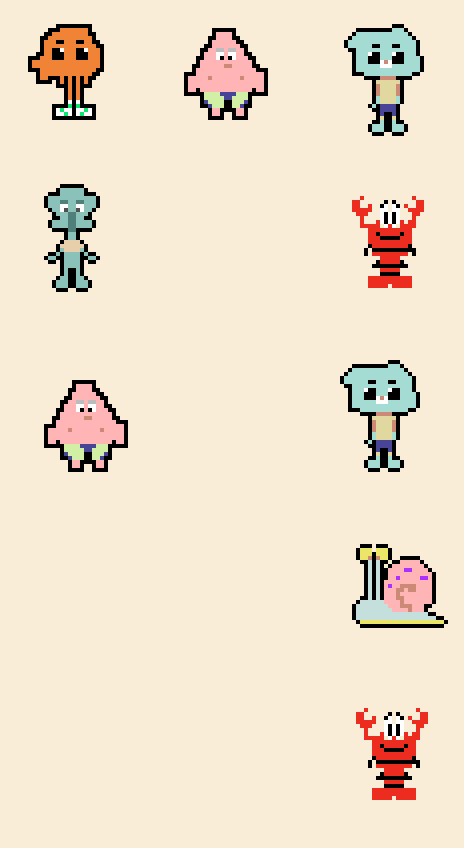
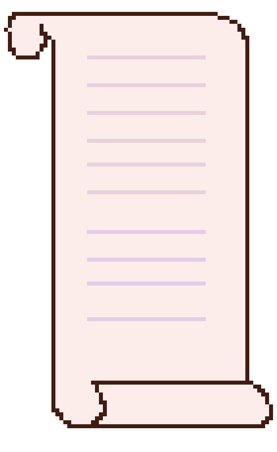
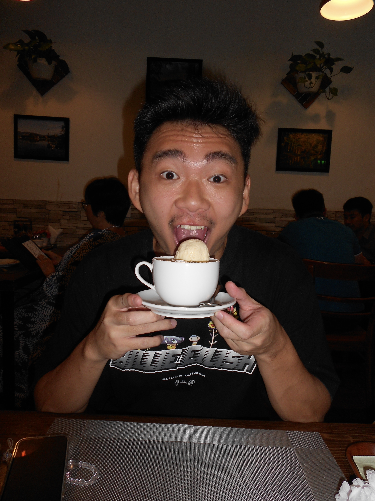
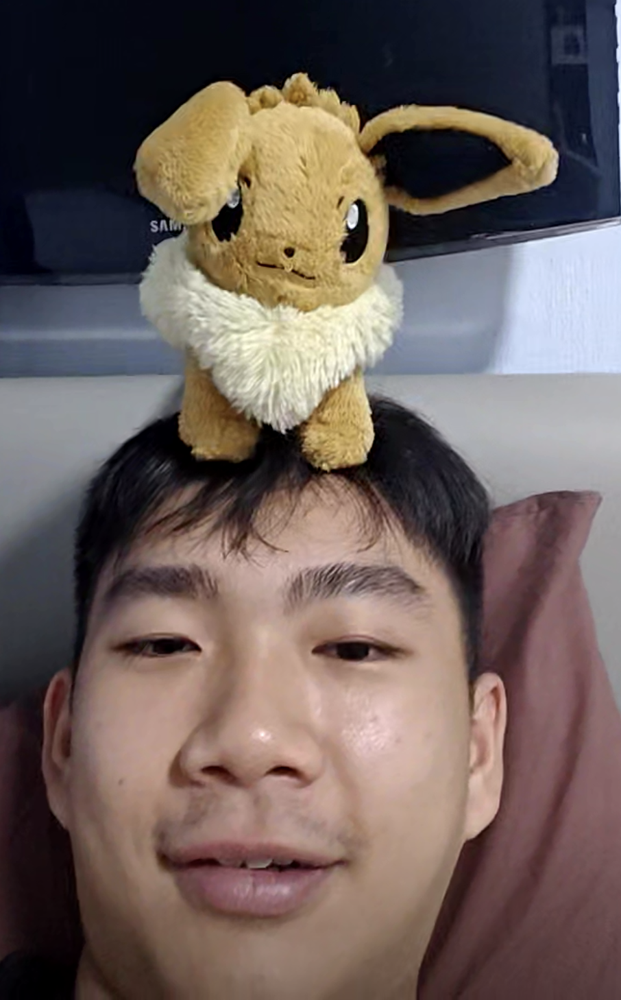
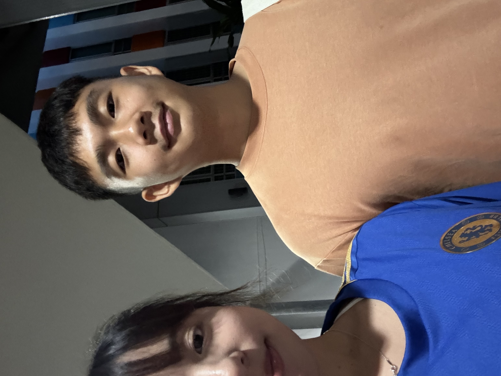
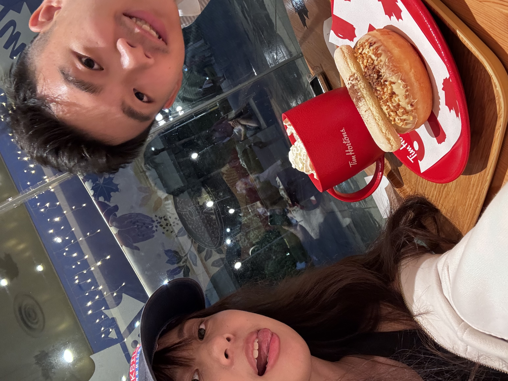
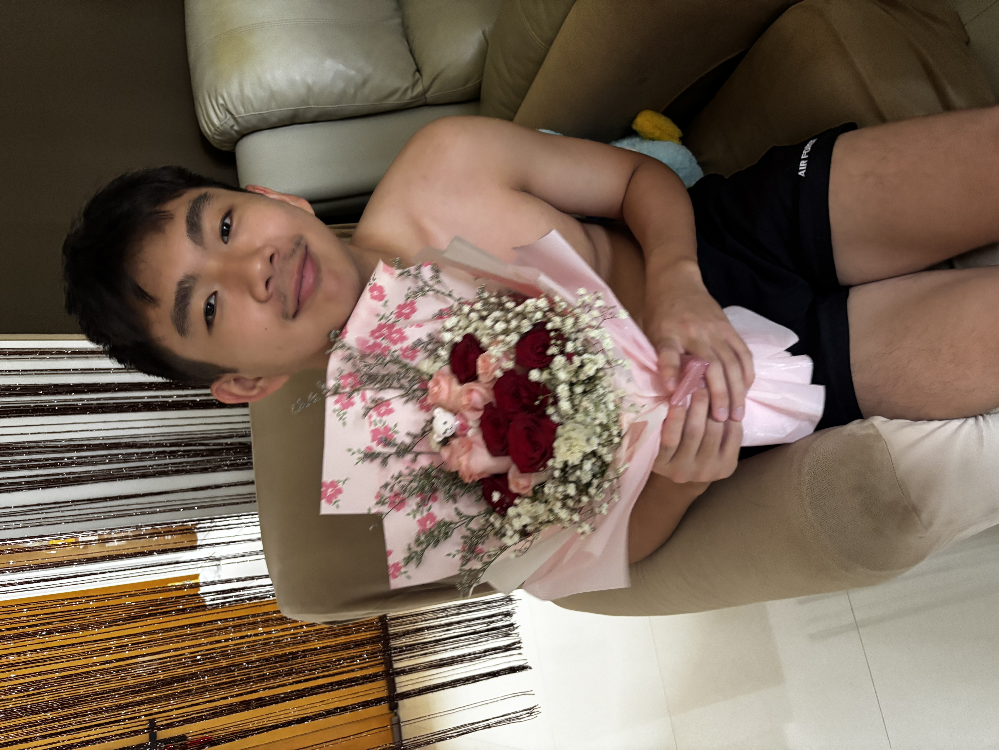
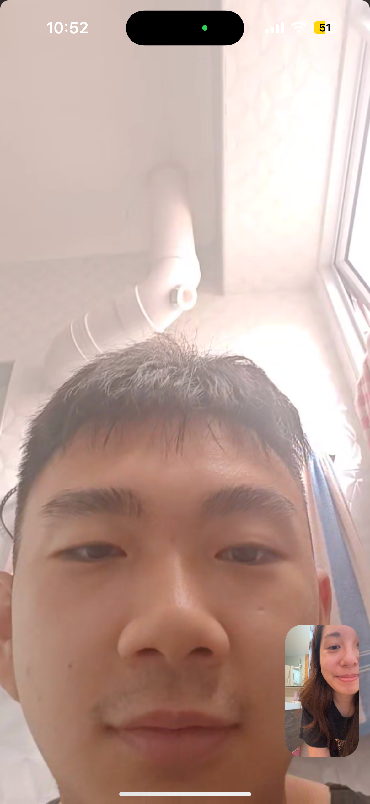
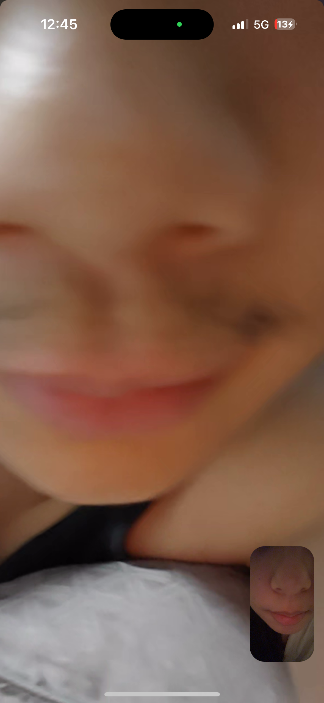
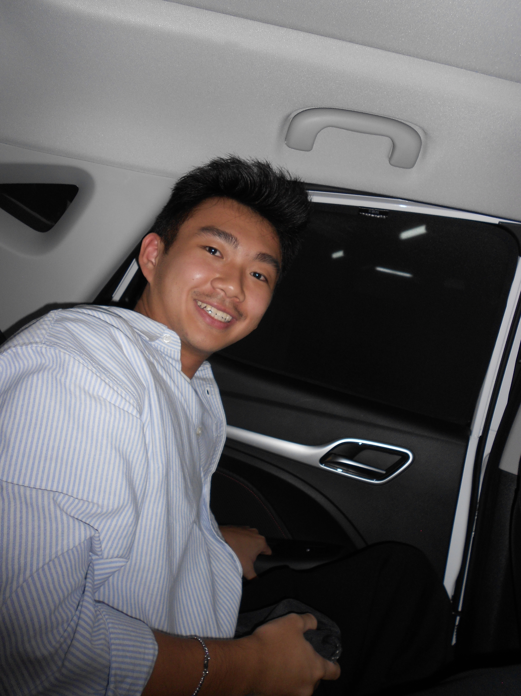

Mawns babyyy and happy birthdayyy, I still remember coming across your profile the very first time, and I thought I’d never even look at anyone younger than me, but somehow I did with yours. Had no idea why, something told me I should click on it. Fast forward, we are together now. Not gonna lie and say that it was a smooth journey, but I think that is what made us stronger. I am not perfect, I can be a crybaby, I take time to process things during conflict, and I always want to get to the bottom of things, but I am really grateful that you try our best to embrace all the uglies. You make me feel very loved.
And I will always remember the things you do for me. Sending me home no matter how tired you are. Coming over to spend time with me + with food even when you gym you spend time with me whenever possible. Comforting me whenever you sense I am even slightly upset.. I feel the most loved when we argue, because at the end of it all, you always tell me you would try your best, and you really do. I really do notice the small things too, how you follow the ways I show love, (baby voices and saying eat well), and saying you love me during *** because you know how much affection means to me.
You make me so, so so happy, baby, I am always excited and happy when you appear on screen (our morning, poop and night calls). I am never sick of spending time with you, I wish we could always be together. I love how you are so selfless and thoughtful you are towards people you care about, and your sincerity in helping those who need it. I have always had the heart for helping others, and I really admire you for your passion in doing good even as a profession, and always trying to do the right thing. I love that you are compassionate and kindhearted. It is okay to feel tired and to not always be at your best, and to feel disappointed when others expects too much from you.
I will always be here on your side no matter what bb. I will do what I can, and love you unconditionally. I see a future with you, and I want to be someone you can lean on, and I believe we will build a happy future and family together. I believe we both have the traits, compatibility, and love to make things work. I feel deeply for you and could emphatize with you in so many levels that I never coud with anyone else. While you are in Ireland, I will really really miss you so so much. I know it wasnt easy with my constant questions, and I know I have things to work on too. But I wish nothing but the best for you, to be happy, safe and healthy, to have lots of fun exploring! But dont forget about me too :< because I think about you all the time. It is going to be tough, but I will work on myself, grow, and become an even better person for you, and for us. I hope you will still miss me with all the fun u will have! I will come for you on March bb. I love you so much bb. Always!







